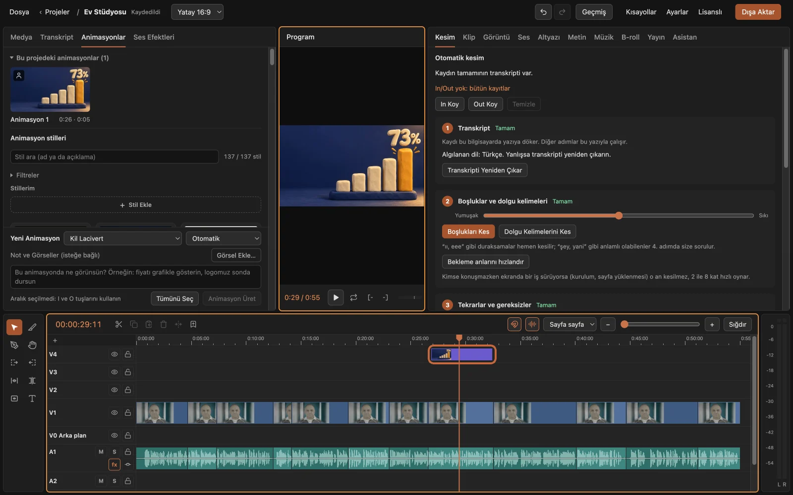
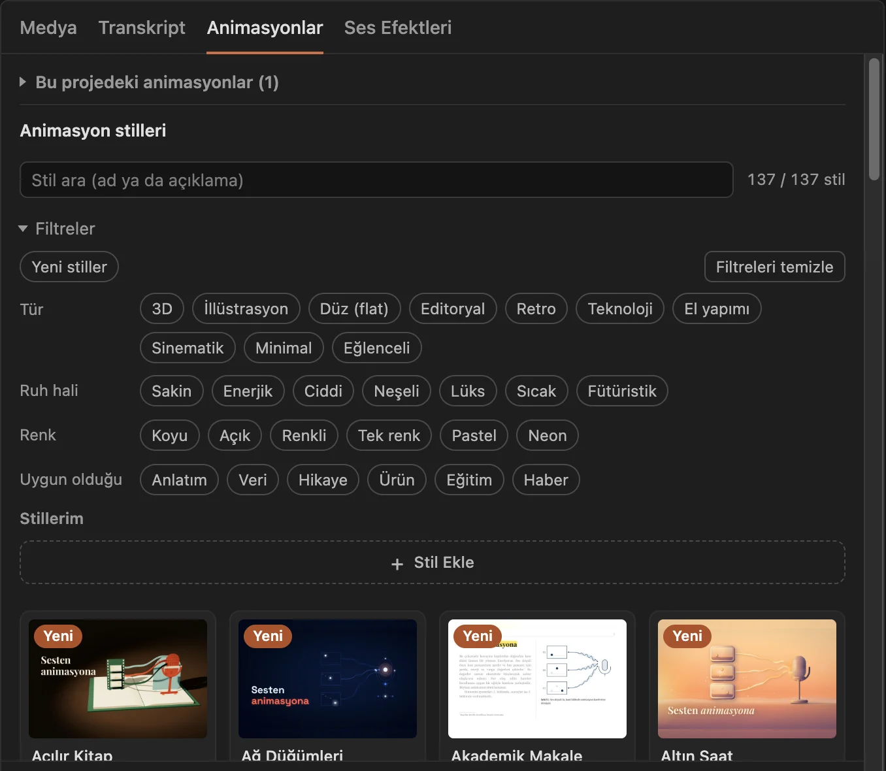

Animasyonlar
Videonun bir bölümünü seç, Kilnframe orada anlattığına uygun bir animasyon yazsın: başlıklar, grafikler, 3D sahneler, el çizimi çizgiler. Sahneleri yapay zeka modelin yazar, bilgisayarın çizer.

Animasyon üret
- Bir aralık seçBaşlayacağı yerde I'ya, biteceği yerde O'ya bas, ya da transkriptte kelimeleri seçip In ve Out'u Seçime Koy de. Sekme bunu gösterir: Seçili: 0:20 ile 0:25 (5 sn). Tümünü Seç kesimin tamamını alır.
- Stil seçYeni Animasyon altında listeden ya da üstteki galeriden bir stil seç; animasyonun yerini de: Otomatik, Tam Ekran ya da Konuşanın Yanında.
- İstersen yönlendirNot ve Görseller (isteğe bağlı) altına ne göstermesi gerektiğini yaz, örneğin “fiyatı grafikle göster, logomuz sonda dursun”. Görsel Ekle… logo, ürün fotoğrafı ya da ekran görüntüsü ekler (en çok 12); her birinin ne olduğunu yaz.
- ÜretAnimasyon Üret'e bas. Basmadan önce sekme yaklaşık ne kadar süreceğini söyler: model sahneleri yazar, sonra bu bilgisayar kareleri çizer. 3D stiller daha uzun sürer.
Sahne kareleri
Kareler gösterilirken (varsayılan böyle) önce Sahne kareleri altında her sahnenin bir karesini görürsün. Henüz hiçbir şey çizilmedi.
- Bir sahneyi değiştirmek için neyin değişeceğini yaz ve Sahneyi Yeniden Yaz'a bas. Not yalnızca o sahneyi değiştirir.
- Beğenince Onayla ve Oluştur'a bas. Animasyon çizilir ve kendi izine yerleşir.
- Vazgeç yazılan sahneleri siler. Yeni bir görsel eklemek için vazgeç ve görseli ekle.
Kareleri görmeden hemen çizmek için Ayarlar › Yapay zeka › Animasyonlar'da Kareleri göstermeden doğrudan çiz'i işaretle.
Bu projedeki animasyonlar
Şimdiye kadar yapılan her animasyon zamanı ve süresiyle listelenir. Animasyonu olan bir aralık yeniden üretilebilir: Yeniden Üret yenisini aynı izde, eskisinin yerine koyar.

Kişi önde
Animasyon klibini seç ve Kişi önde'yi işaretle: maskenle kesilip önüne alınırsın, animasyon arkandan geçer. Her parça için ayrı ayarlamak istersen klibi jiletle kes.
Stiller
Animasyon stilleri'nde 137 stil var. Adıyla ya da açıklamasıyla ara, filtrele ya da beğendiğin görsellerden kendi stilini yap. Bkz. Animasyon stilleri ve kendi stilin.

Animasyon en ağır yapay zeka işlerinden biri: model her sahne ve görsel için ayrı çalışır. Sekme bunu başlamadan önce söyler.